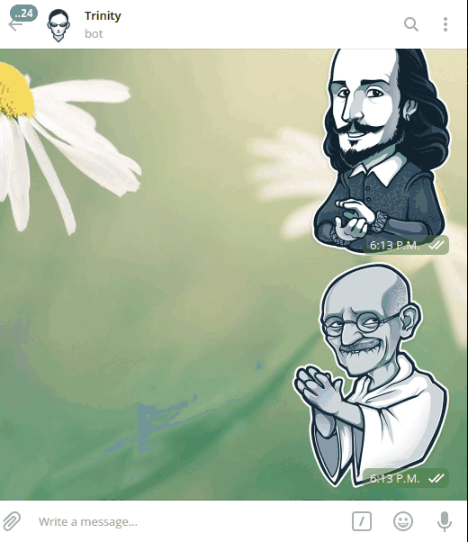

By popular consensus, Sentiment Analysis is the process of determining whether a piece of writing is positive, negative or neutral. It is also known as opinion mining, deriving the opinion or attitude of a speaker. A common use case for this technology is to discover how people feel about a particular topic.
Use cases
Sentiment analysis is extremely useful in social media monitoring as it allows us to gain an overview of the wider public opinion behind certain topics. The applications of sentiment analysis are broad and powerful. The ability to extract insights from social data is a practice that is being widely adopted by organizations across the world.
Sentiment Analysis in Trading
Once upon a time, it was thought that stocks prices where utterly random and that a chimp throwing darts at a board could make better predictions than a professional trader. However, it has also been proven that stocks are driven by people speculation and media manipulation, and after all, behind stock prices theres a simple offer/demand rule imposed by consumers.
Sentiment analysis has proven to be a useful tool in predicting stock prices due to its correlation with changes in offer and demand. we've seen a lot of professional traders sticked to the computer reading news in order to get a grasp of how media portraits a given asset. Media moves people and people move stock prices.
Sentiment Analysis and Trinity
In order to get a grasp of people's opinion about a given topic, Trinity was equipped with a sentiment analyzer(SA). The SA works in two stages. The firs one is the data gathering where a programmable bot (scraper) looks for the most recent news about a given topic and stores them in trinities memory.
After the news have been collected, the second stage analyzes the text in each news article and runs a model to determine if it is positive, neutral or negative about the topic. Finally, the results are averaged to determine the overall people opinion. The command is: /feeling [topic]
